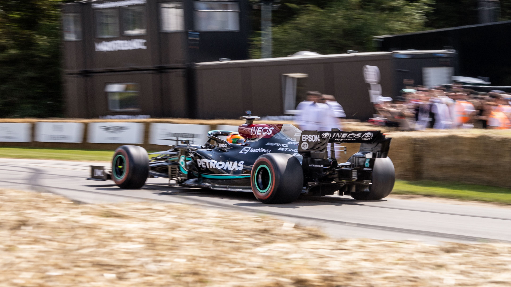

F1 Silverstone: l'ala macarena di Verstappen
La Red Bull ha portato a Silverstone un'ala posteriore rotante. Ferrari e Mercedes hanno protestato. La FIA ha avviato un'indagine di sicurezza.

SILVERSTONE � La stagione 2026 di Formula 1 � stata segnata dall'innovazione tecnica pi� controversa: l'ala posteriore rotante soprannominata "Macarena". Il flap posteriore ruota fino a 225� per ridurre la resistenza sui rettilinei.
Al GP di Gran Bretagna (5 luglio), vinto da Charles Leclerc, l'ala di Verstappen non si � richiusa correttamente causando un'uscita di pista alla curva Stowe. Era il secondo incidente consecutivo dopo l'Austria.
"A quel punto � super pericoloso, perch� puoi davvero farti male. Due volte! Sono stato fortunato in Austria, fortunato qui, ma sono veramente stufo." � Max Verstappen

La differenza tecnica: l'ala Ferrari ruota ~225� in senso orario, quella Red Bull ~160� in senso antiorario. Entrambe avevano approvazione FIA, ma i due incidenti hanno spinto a rivalutare la sicurezza.
Verstappen � 8� in classifica con 8 punti. La FIA potrebbe bandire le ali rotanti dal 2027.